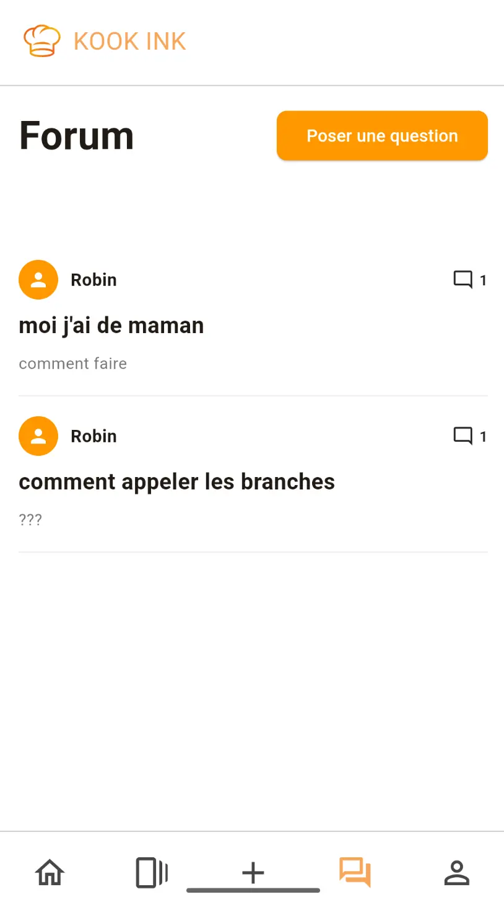
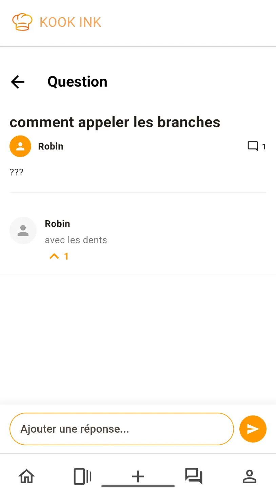
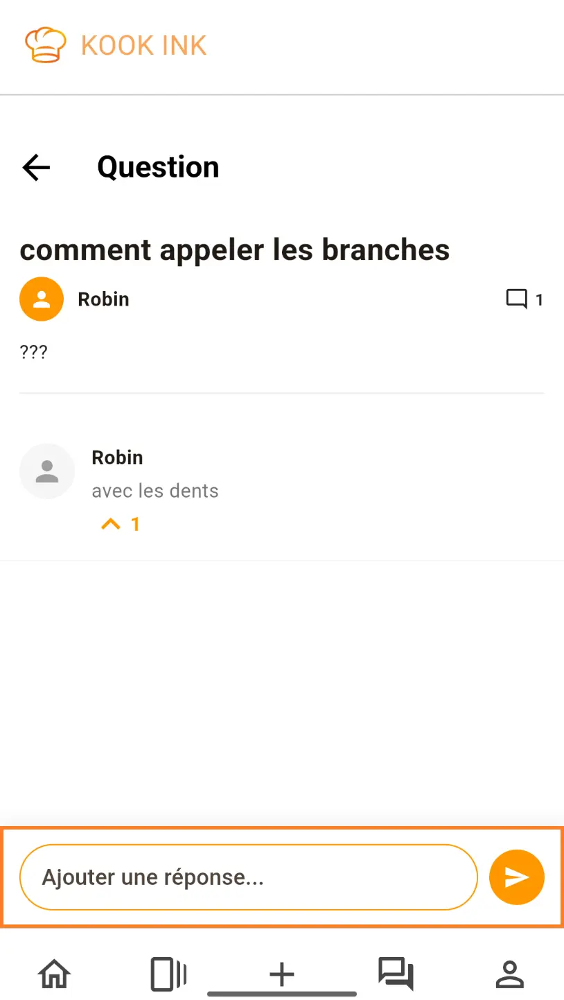
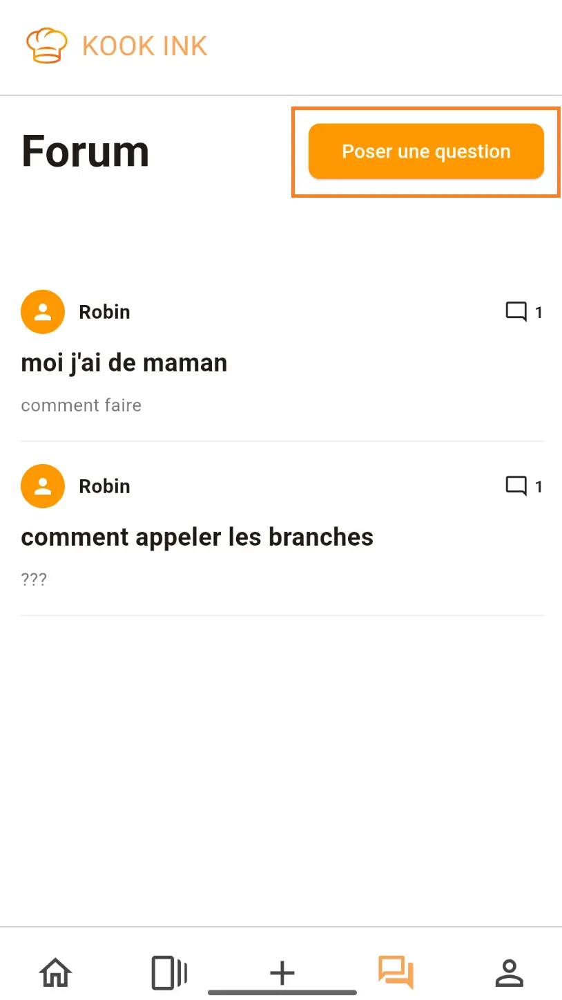

Le forum
Le forum est un espace d'échanges conçu pour chercher des conseils auprès des autres utilisateurs. Vous posez une question, la communauté vous répond et les meilleures réponses sont mises en avant !
Voir le forum
Le forum est accessible directement depuis la barre de navigation, il s'agit de l'icône 💬.
Une fois dessus, vous verrez apparaître la liste de toutes les questions posées rangées par ordre d'ancienneté (les plus récents en haut).

Appuyez sur une question pour voir les réponses de la communauté. L'indicateur numérique en bas des réponses représente le nombre de personnes qui ont mis un vote positif à la réponse. Vous pouvez appuyer sur le bouton ⬆️ pour mettre vous aussi un vote positif à une réponse. Les réponses les mieux votées sont mis vers le haut.

Réponder à une question
Pour répondre à une question, appuyez sur la question qui vous intéresse et remplissez le formulaire en bas de page.

Entrez le message que vous souhaitez envoyer et appuyez sur le bouton "Envoyer". Le message devrait apparaître dans la liste des réponses, visible par toute la communauté.
Poser une question
Pour poser votre question, rendez vous d'abord sur la page avec la liste des questions du forum. Il y a un bouton pour ouvrir un formulaire en haut de page.

Allez sur le formulaire, puis écrivez votre question, appuyez sur le bouton "Publier" et votre question apparaît dans la liste des questions.